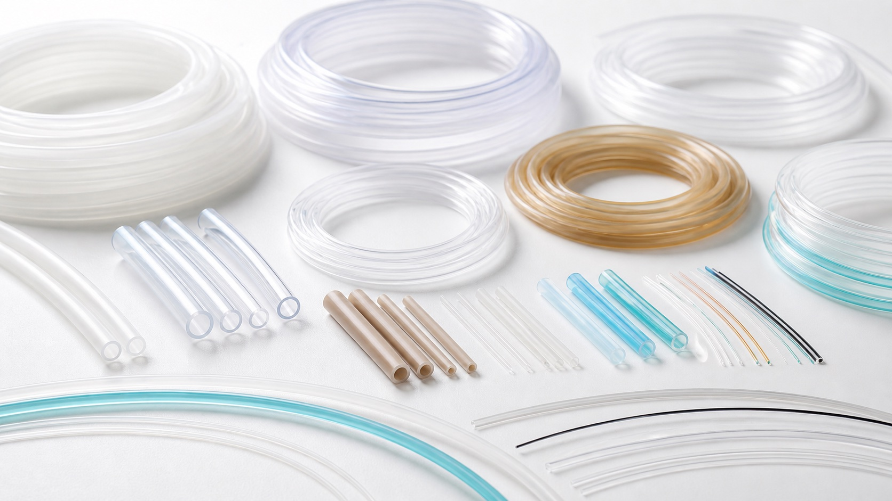

Material compatibility
Confirm solvent, analyte, adsorption, leachables, sterilization, and temperature requirements.
Tubing selection
Compare PTFE, FEP, PEEK, silicone, flexible laboratory, and microbore tubing for microfluidic systems by material, dimensions, flexibility, and application. Enquiry categories only: specification, source, availability and lead time require review.

Selection answer
Choose microfluidic tubing by material compatibility first, then confirm inner diameter, outer diameter, pressure, bend radius, connection method, and required length. PTFE supports broad chemical resistance, FEP adds optical clarity and flexibility, PEEK is used for rigid high-performance fluid paths, and silicone suits compliant or peristaltic-pump sections.
General selection guidance · Updated November 6, 2026. These are general selection considerations, not verified specifications for a listed item.
Before requesting a quote
Define requirements first. Source, documentation, pricing, availability and lead time require confirmation in the proposal.
Confirm solvent, analyte, adsorption, leachables, sterilization, and temperature requirements.
Inner diameter influences resistance and internal volume; outer diameter must match the connector.
Consider pressure, flexibility, pulsation, permeability, and whether the line enters a pump head.
Research components & custom sourcing
Open an enquiry for requirements to discuss. Listings do not imply inventory, specified products, or a specified manufacturer.
Tubing
Specification review required. Source, availability and lead time to be confirmed.
Discuss your requirements for ptfe tubing. This enquiry category does not identify a fixed, stocked product. Specification, source and supply route require review.
Tubing
Specification review required. Source, availability and lead time to be confirmed.
Discuss your requirements for fep tubing. This enquiry category does not identify a fixed, stocked product. Specification, source and supply route require review.
Tubing
Specification review required. Source, availability and lead time to be confirmed.
Discuss your requirements for peek tubing. This enquiry category does not identify a fixed, stocked product. Specification, source and supply route require review.
Tubing
Specification review required. Source, availability and lead time to be confirmed.
Discuss your requirements for silicone tubing. This enquiry category does not identify a fixed, stocked product. Specification, source and supply route require review.
Tubing
Specification review required. Source, availability and lead time to be confirmed.
Discuss your requirements for flexible laboratory tubing. This enquiry category does not identify a fixed, stocked product. Specification, source and supply route require review.
Tubing
Specification review required. Source, availability and lead time to be confirmed.
Discuss your requirements for microbore tubing. This enquiry category does not identify a fixed, stocked product. Specification, source and supply route require review.
Technical review
Share the fluid, target flow or pressure, interface sizes, and intended research workflow. We can help build a compatible shortlist.